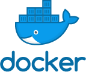
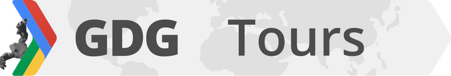
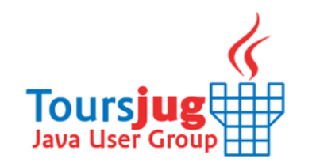
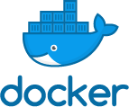
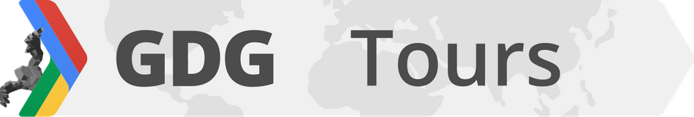
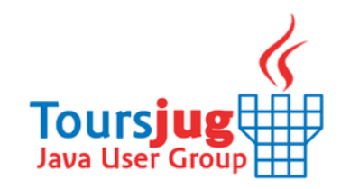
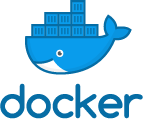
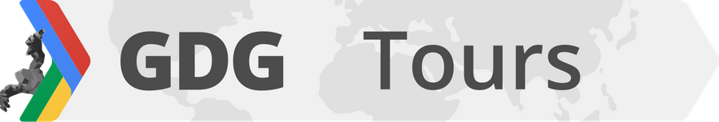
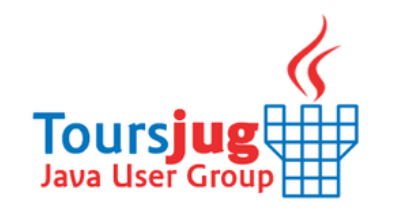

Le comité Touraine Tech de l’association PALO ALTOURS, est constitué de membres actifs de la communauté tech de Tours métropole et sa région . Ils sont par ailleurs engagés dans les formations bénévoles, ateliers techniques et évènements du numérique : Tours JS, Tours JUG, GDG Tours, les Ateliers du Web Design, Docker Tours...


